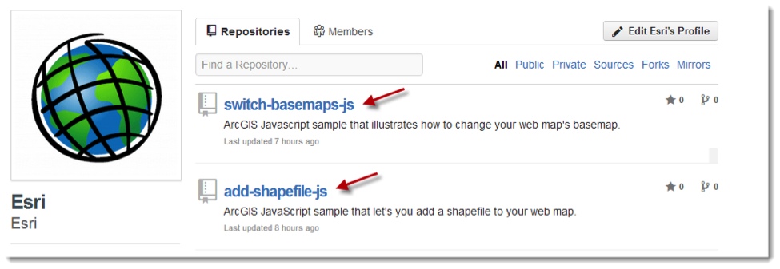
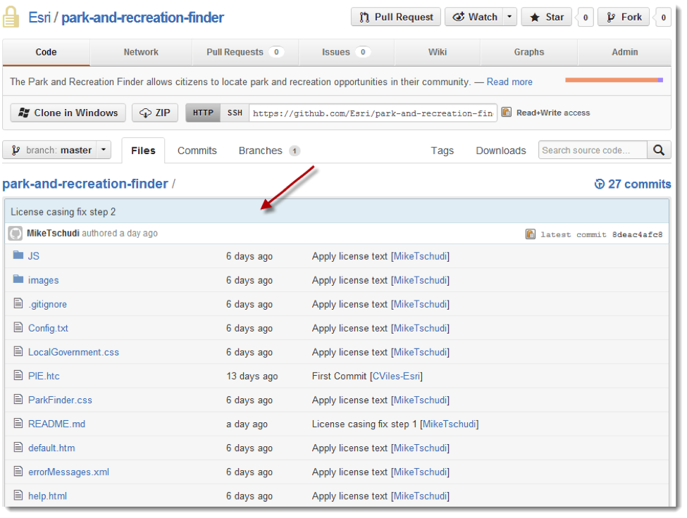
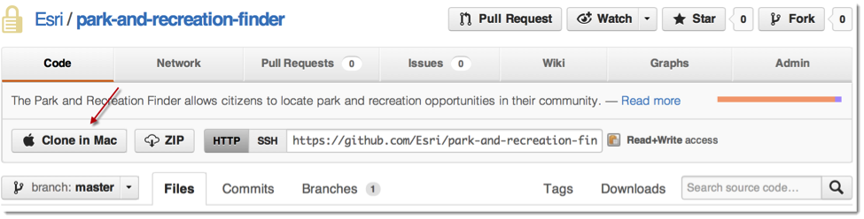

Esri Quickstart: Getting to Know GitHub
To help jump start working with Esri code on GitHub, we’ve put together this short question and answer page introducing GitHub concepts. We recommend reviewing GitHub’s offical help documentation to learn more.
How do I download Esri Code?
Every repository in GitHub comes with a ZIP button and a download link. To download Esri source code, you can click either the ZIP button or the download link. The download link offers more options for how your download gets packaged; for example, Zip, GZip.
Figure 1: Download Esri Code
What is a repository?
A repository is a container where Esri stores files in a logical grouping. Esri may bundle a single project / application into a repository or multiple projects / applications in a repository. All Esri repositories will have readme files, pronounced “Read-Me” which will document how to get started working with the code base.
Figure 2: Esri repositories Figure 3: Inside Esri repositories 
Should I clone a repository?
Yes, if you want the power of GitHub behind you. Cloning is another way to obtain Esri source code. To clone a repository on GitHub’s website you must have Git software installed on your computer. This is because cloning a repository physically creates a copy of a repository, storing it in a way such that it can be updated and modified using Git tools. From the GitHub website, you can download Github for Mac, Github for Windows and a variety of Git options on Linux operating systems. Cloning repositories enables you to have one copy of your code locally and one copy in the GitHub cloud. It also allows you to sync between the two spaces, track changes and restore code back to a particular day and time.
Figure 4: Clone a repository Should I fork a repository?
Forking is another action possible with a repository. When you fork
a repository it will show up under your GitHub account. If you want
to incorporate your code changes in our repositories, you will need
to fork the repository. Following this you will need to issue a
“Pull request”.
A pull request is a way of saying, ‘please consider adding my
changes to your official repository.’ Sometimes this form of social
coding will result in an update and other times no action will be
taken.

What should I do if I encounter a problem?
If you run into problems with a download or a repository, you may find the answers in our readme files. In addition, you can post questions using the Issues tab found within each GitHub repository. If you’re having problems getting a web mapping application up and running, check to make sure you’ve copied all your files correctly onto your web server or have web-enabled the directory where your code lives.